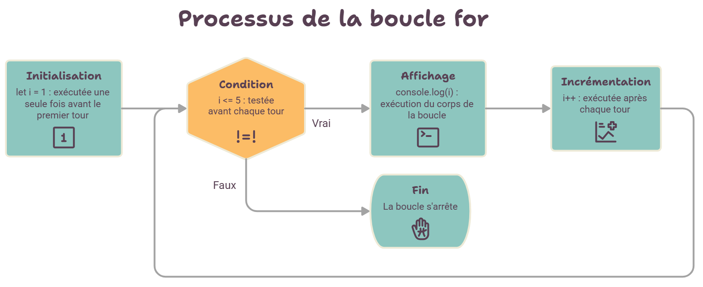

Chapitre 4
Les boucles : répéter sans recopier
Afficher 100 étoiles, parcourir les 50 produits d'une boutique, relancer une animation tant que la souris survole un bouton : dès qu'une action se répète, on utilise une boucle plutôt que de recopier la même ligne.
Pourquoi une boucle ?
Sans boucle 😩
console.log("Ligne 1");
console.log("Ligne 2");
console.log("Ligne 3");
// … et si on en veut 500 ?Avec une boucle 😎
for (let i = 1; i <= 500; i++) {
console.log("Ligne " + i);
}Toute boucle répond à trois questions : où commence-t-on ? jusqu'à quand continue-t-on ? comment avance-t-on d'un tour à l'autre ? Oublier la troisième, c'est créer une boucle infinie.
La boucle POUR (for) : un nombre de tours connu
On l'utilise quand on sait à l'avance combien de fois
répéter : 10 fois, autant de fois qu'il y a d'éléments dans une liste…
Elle utilise une variable compteur, souvent nommée
i.
Pseudo-code
POUR i DE 1 À 5 FAIRE
AFFICHER i
FIN POURJavaScript
for (let i = 1; i <= 5; i++) {
console.log(i);
}
Les trois parties entre parenthèses, séparées par des ; :
1. Initialisation
let i = 1 : exécutée une seule fois, avant le premier tour.
2. Condition
i <= 5 : testée avant chaque tour. Si elle est fausse, la boucle s'arrête.
3. Incrémentation
i++ (c'est-à-dire i = i + 1) : exécutée après chaque tour.
Le schéma de l'accumulateur
Très souvent, une boucle sert à construire un résultat petit à petit : une somme, un total de panier, un texte. On prépare une variable avant la boucle, on la met à jour dans la boucle, et on l'utilise après. Suivez la somme 1 + 2 + … + n :
Combien de fois « MMI » est-il affiché ?
for (let i = 0; i < 4; i++) {
console.log("MMI");
}
i prend les valeurs 0, 1, 2 et 3 (quand i
vaut 4, i < 4 est faux). Partir de 0 avec
< est la forme la plus courante : c'est exactement
celle qu'on utilisera pour parcourir les tableaux.
La boucle TANT QUE (while) : on ne sait pas quand ça s'arrête
On l'utilise quand le nombre de tours dépend de ce qui se passe pendant la boucle : redemander un mot de passe tant qu'il est faux, faire tomber un objet tant qu'il n'a pas touché le sol, lancer un dé jusqu'à obtenir un 6…
Pseudo-code
abonnes ← 100
semaines ← 0
TANT QUE abonnes < 1000 FAIRE
abonnes ← abonnes × 2
semaines ← semaines + 1
FIN TANT QUE
AFFICHER semainesJavaScript
let abonnes = 100;
let semaines = 0;
while (abonnes < 1000) {
abonnes = abonnes * 2;
semaines = semaines + 1;
}
console.log(semaines);Un compte qui double ses abonné·es chaque semaine : combien de semaines pour passer de 100 à 1000 ? Essayez aussi avec un départ à 1000 (la boucle ne fait aucun tour), puis avec un départ à 0…
La boucle infinie
Si la condition d'un while ne devient jamais fausse, le
programme tourne sans fin et l'onglet du navigateur se fige. Avec un
départ à 0 abonné, 0 × 2 vaut toujours 0 : la condition
abonnes < 1000 reste vraie pour toujours. Avant
d'écrire un while, demandez-vous toujours :
qu'est-ce qui, dans la boucle, rapproche la condition de
devenir fausse ?
for ou while ?
| Situation | Boucle |
|---|---|
| Afficher les 10 premiers produits | for : on sait qu'il y a 10 tours. |
| Parcourir toutes les cases d'un tableau | for : autant de tours que de cases. |
| Redemander une saisie tant qu'elle est invalide | while : on ne sait pas combien d'essais il faudra. |
| Faire avancer un personnage jusqu'au bord de l'écran | while : ça dépend de sa vitesse et de sa position. |
Tout ce qu'on écrit avec for peut s'écrire avec
while (et inversement), mais choisir la bonne boucle rend
le code plus lisible.
À retenir
forquand le nombre de tours est connu,whilequand il dépend d'une condition.- La condition est testée avant chaque tour : une boucle peut ne faire aucun tour.
- Accumulateur : initialiser avant, mettre à jour dans la boucle, utiliser après.
- Dans un
while, quelque chose doit faire évoluer la condition, sinon : boucle infinie.
Pour aller plus loin, le TD boucles de
répétition présente aussi do … while. Entraînez-vous :
exercices 7 à 11.